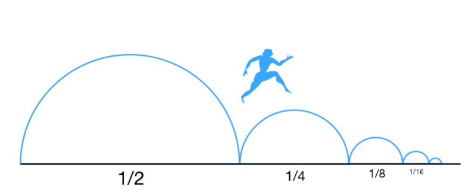

§1.2 数列的极限
引入：
- 割圆术

S3=21sin32πR2×3
S4=21sin42πR2×4
...
Sn=21sinn2πR2×n→πR2
- 芝诺佯谬（两分法）
芝诺：“一个人从 A 点走到 B 点，要先走完路程的 1/2，再走完剩下总路程的 1/2，再走完剩下的 1/2……”如此循环下去，永远不能到终点。
庄子：“一尺之棰，日取其半，万世不竭。” ——《庄子·天下篇》

n→+∞lim(1+21+41+⋯+2n1)=2
一、定义
-
数列 {xn}：x1,x2,⋯,xn,⋯，一般为无穷
-
极限（ϵ−N 定义）
n→∞limxn=a(const) ⇔ ∀ϵ>0，∃N=N(ϵ)>0，当 n>N 时，∣xn−a∣<ϵ ⇔ ∀ϵ>0，∃N>0，当 n>N 时，xn∈U(a,ϵ) [落在 U(a,ϵ) 之外的点只有有限个]
-
此时也称数列收敛。去掉、改变、增加数列的有限项，不改变其极限
例题
证明 n→∞limn1=0
解：∀ϵ>0∃N=[ϵ1]+1n>N=[ϵ1]+1
∣n1−0∣=n1<ϵ 恒成立
∴n→∞limn1=0
二、数列极限的性质
定义1
{xn} 有界 ⇔∃M>0,∀n,∣xn∣≤M
- {xn} 有界 ⇒ {xn} 收敛，反例：{(−1)n}
定义2
{xn} 的每一项中，xn≤xn+1，则称 {xn} 单调递增；xn≥xn+1，则称 {xn} 单调递减
- {xn} 单调且有界 ⇒ {xn} 收敛
- {xn} 非单调 ⇒ {xn} 发散，反例：n→∞limn(−1)n=0
-
性质 2：若数列存在极限（或数列收敛），则它的极限唯一
证明（反证法）
假设 n→∞limxn=a，n→∞limxn=b，且 a=b，不妨设 b>a
∀ϵ>0，∃N1n>N1a−ϵ<xn<a+ϵ
∀ϵ>0，∃N2n>N2b−ϵ<xn<b+ϵ
∃N>0n>NN=max{N1,N2}
取 ϵ=2b−a>0
此时 xn<a+ϵ=b−ϵ<xn，矛盾，故 a=b
-
性质 3：保序性（保不等号性）
∃N>0当n>N时，xn≤yn⇒n→∞limxn≤n→∞limyn
证明（反证法）
设 n→∞limxn=a，n→∞limxn=b，假设 a>b
∀ϵ>0，∃N1n>N1a−ϵ<xn<a+ϵ
∀ϵ>0，∃N2n>N2b−ϵ<yn<b+ϵ
∃N=max{N1,N2}
取 ϵ=2a−b>0
此时 yn<b+ϵ=a−ϵ<xn，矛盾，Q.E.D
- xn<yn⇒n→∞limxn≤n→∞limyn
- xn<yn⇒n→∞limxn<n→∞limyn，反例：{n+11}，{n1}
- 保号性
- xn≥0⇒n→∞limxn≥0
- xn≤0⇒n→∞limxn≤0
- n→∞limxn=a且a>0⇒∃N>0当n>Nxn>0
- n→∞limxn=a且a≥0⇒∃N>0当n>Nxn≥0，反例：{−n1}
定义 3（子列）
从 {xn} 中任意取出 k 项，保持原来顺序，排成新数列 {xnk}:xn1,xn2,⋯,xnk,⋯，称 {xnk} 为 {xn} 的子数列。显然，有 nk≥k，当取等号时，为 {xn} 本身
-
性质 4
n→∞limxn=a⇔∀{xnk},k→∞limxnk=a
证明
"⇐": {xn} 为一子列，n→∞limxn=a
"⇒": ∀ϵ>0nk≥k≥N
∃k=N∣xnk−a∣<ϵ
-
推论：存在 {xnk} 不收敛于 a⇒{xn} 发散
-
n→∞limxn=a⇔n→∞limx2k=n→∞limx2k+1=a
证明
"⇒": 性质 4，{x2k} 与 {x2k+1} 均为 {xn} 子列
"⇐": ∀ϵ>0∃N=max{2N1+1,2N2+1}n>N 时，∣xn−a∣<ϵ
∃N1k>N1∣x2k−a∣<ϵ
∃N2k>N2∣x2k+1−a∣<ϵ